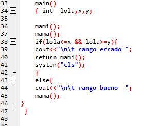

| |

opinión
Me gusto mucho el trabajo creo que lo termine de una forma adecuada y quiero seguir trabajando por mi cuenta con los ultimos trabajos e mirado la importancia de tomar notas sobre los temas explicados, el tema de las funciones me a gustado mucho porque me permite ahorrar tiempo y espacio en mi algoritmo